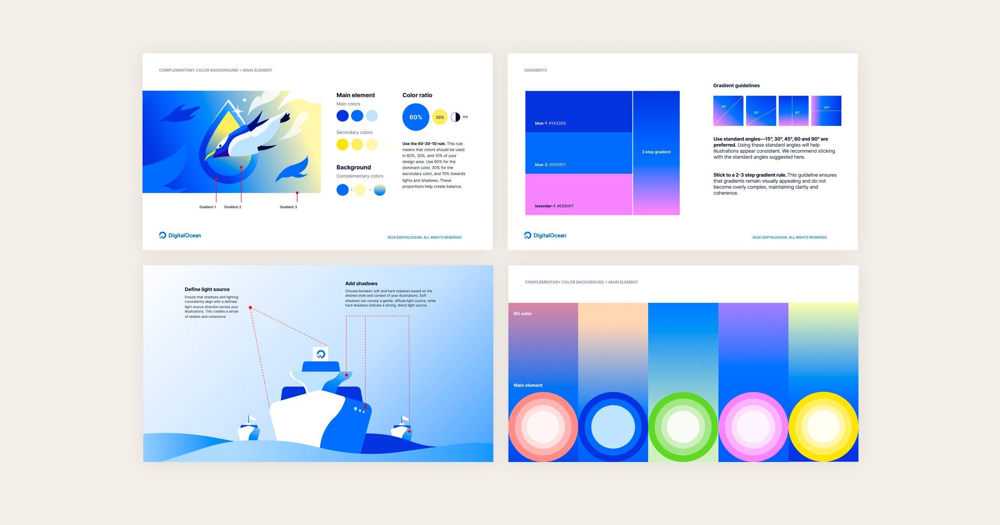
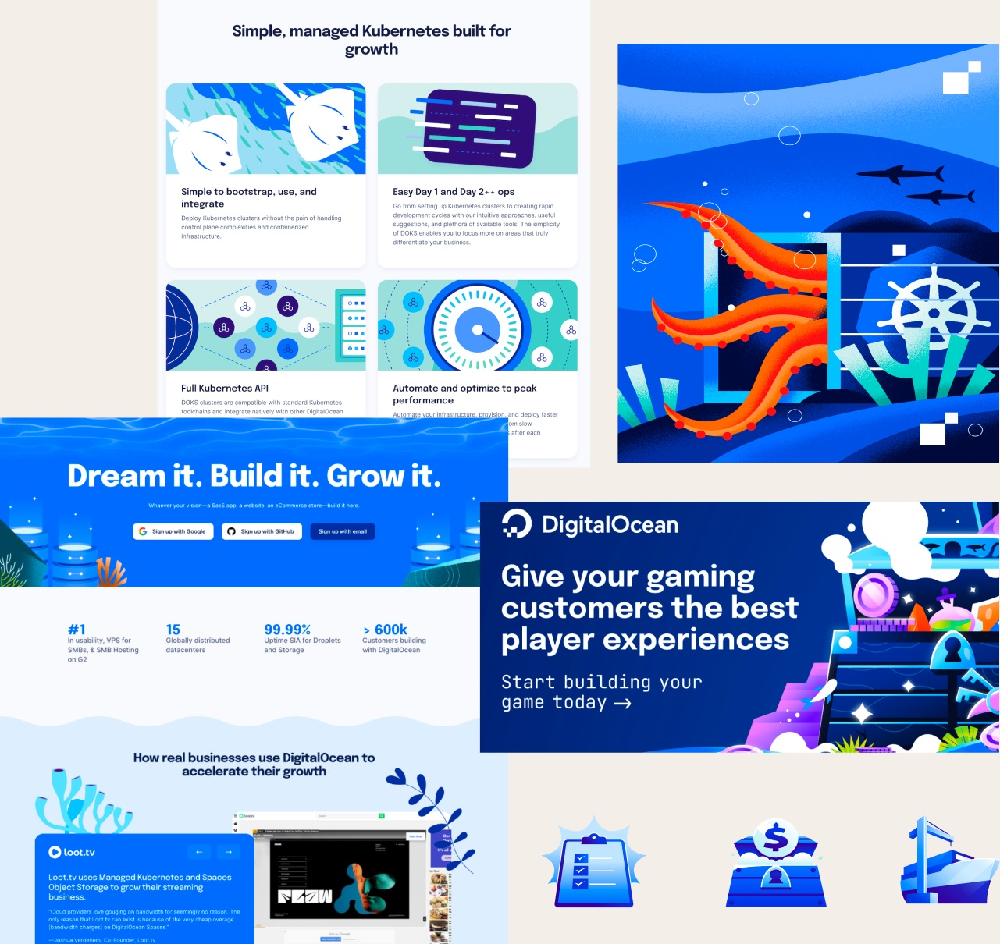
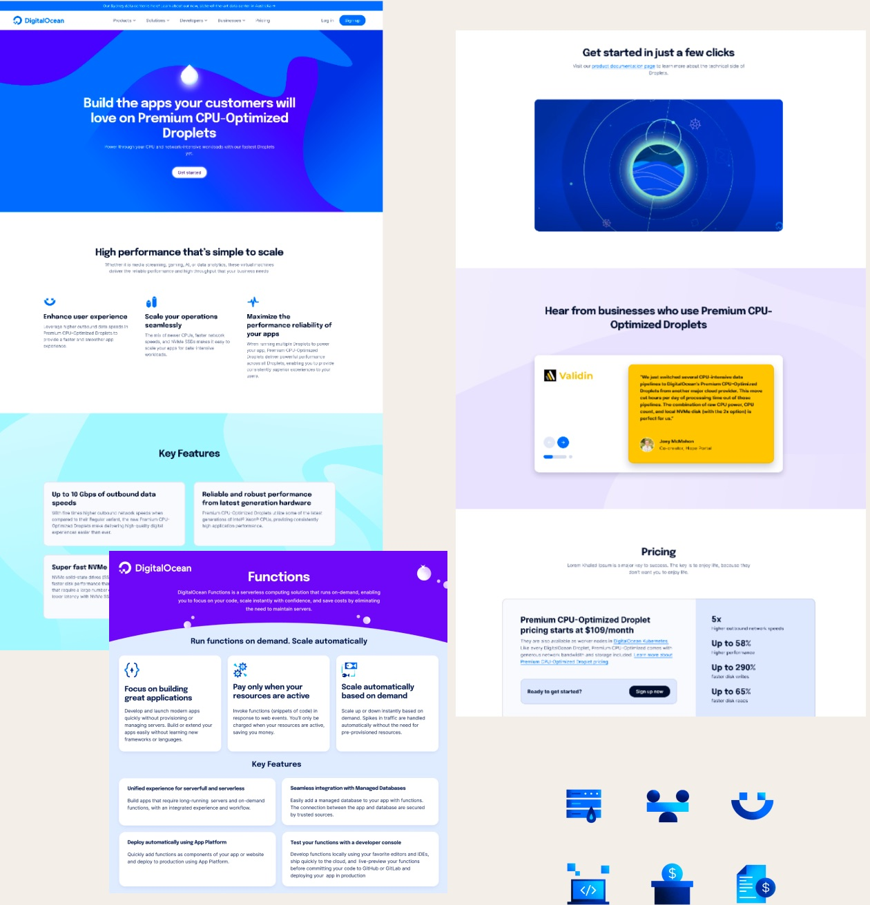
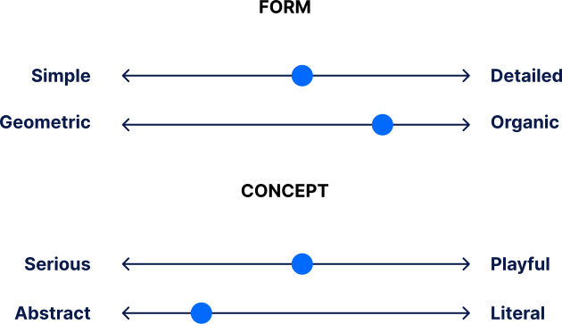
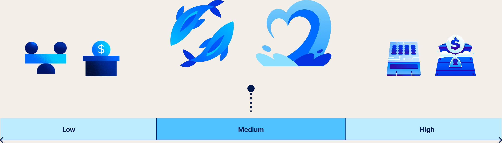
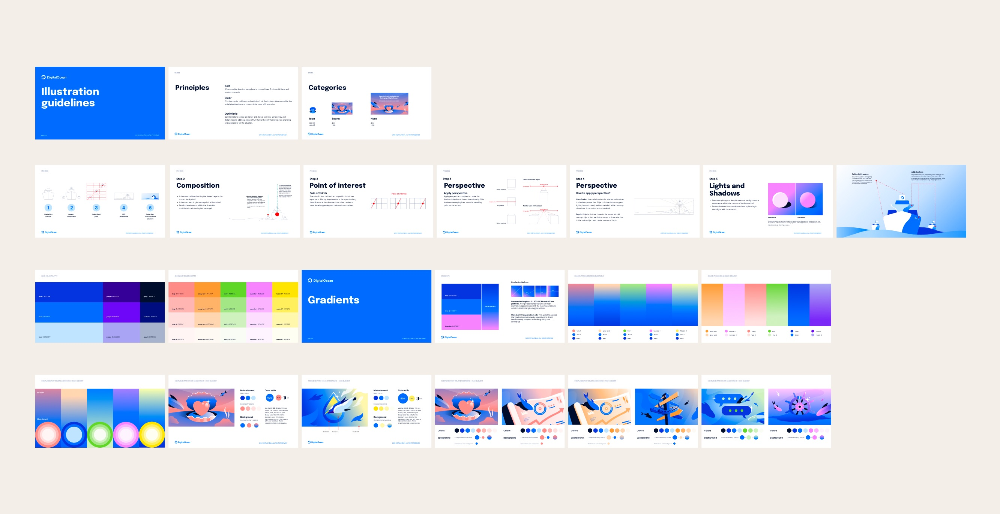
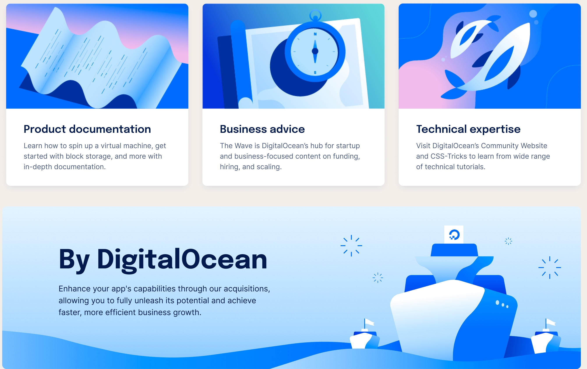

DigitalOcean illustration guidelines: Finding the balance between friendly and professional.
3 min read
- Client:
- DigitalOcean
- Role:
- Digital Experience Designer
- Project:
- Illustration guidelines
Illustration guidelines for DigitalOcean, written as the company grew from developers to small and medium-sized businesses, so every illustration balances friendly and professional.
In 2023 I joined DigitalOcean’s Experience Design team as a Digital Experience Designer, keeping the experience cohesive across our digital platforms. That included helping maintain Kraken, our design system, and designing digitalocean.com.
Early on, I noticed the illustration styles didn’t match across channels and marketing materials. To bring consistency and clarity, I proposed documenting our illustration guidelines and process, the same way we had documented the design system.

The context
A developer brand, now speaking to small businesses too.
DigitalOcean’s audience had always been developers. As small and medium-sized businesses (SMBs) became more important, the company broadened its audience, and the brand’s vision and attributes evolved with it.
For illustration, that meant balancing our friendly voice with a more professional tone, while staying consistent and resonating with every audience.
The process
Where the brand has been, where it is, and where it’s going.
Brand audit. We started with an illustration audit to understand where we had been. The developer-focused style was friendly but leaned too whimsical. The later shift toward a professional look went too far the other way: plain and not engaging. We needed common ground.
Brand tracking. Next we looked at how the brand was performing, collecting customer perceptions, attitudes, and behaviors. In A/B tests, home pages with a balanced look and feel did 86% better than the more serious ones, which scored only 16%.
Brand vision. Building on the audit, we set where the brand should go, so our illustrations reflect where we’ve been and where we are, and guide us with purpose into the future.


The strategy
The sweet spot between professional and friendly.
To align with the company’s evolving vision and serve both audiences, we created a new visual strategy for illustration, built on DigitalOcean’s brand voice.
We used spectrums to find the balance: simple to detailed, geometric to organic, serious to playful, abstract to literal. Placing our style on each one widened our perspective and made our direction easier to explain.
- Fun but not flippant.
- Knowledgeable but not condescending.
- Supportive but not infantilizing.
- Caring but not impractical.


The principles
Clear, bold, and simple.
Three principles make sure every illustration and visual element adds something meaningful to the story.
Clear. Prioritize clarity, boldness, and optimism. Always consider the intention behind an illustration, and communicate ideas with precision.
Bold. Tell stories through metaphor instead of overly literal concepts, so illustrations are informative but also vibrant and full of joy.
Simple. Use only essential, non-decorative elements. Simplicity keeps ideas clear and guides people through concepts, stories, and scenarios.


The outcome
One visual language for developers and businesses alike.
The work wasn’t just about adapting to a new audience. It was about finding a blend that resonates with both developers and SMB customers.
The result is a visual strategy that reflects DigitalOcean’s commitment to inclusivity, innovation, and a seamless digital experience for everyone.